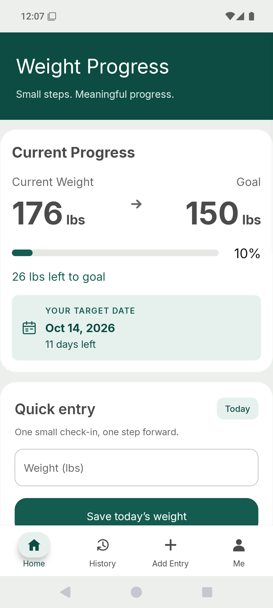
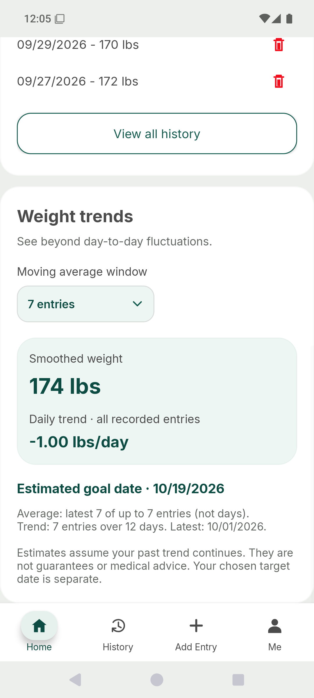
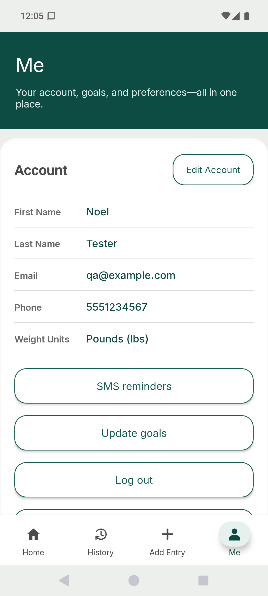
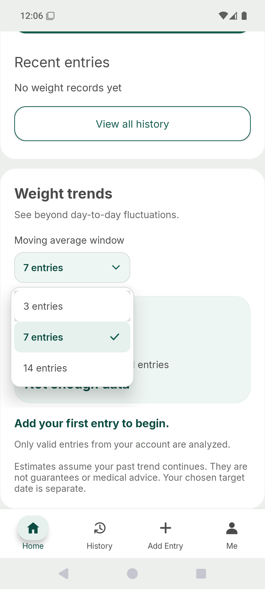

Android application / CS 499 capstone
Weight Progress.
A clearer way to track personal progress. A practical opportunity to strengthen the software behind the experience.
- Original artifact
- CS 360 · May–June 2026
- Enhancement categories
- Design · Algorithms · Databases
- Technology
- Java · Android · Room / SQLite
- Portfolio status
- Module 5 · October 2026
The starting point
Useful functionality.
Room for a stronger foundation.
Originally created for CS 360: Mobile Architecture and Programming, Weight Progress supports local accounts, daily weight records, history editing, goal tracking, and optional SMS notifications. The original app used Java, Android XML layouts, and SQLite. It already included password hashing, database constraints, and useful functionality.
The capstone builds on that foundation. I’m using one application to explore maintainable architecture, efficient analysis, and reliable persistence. The Enhancement 1 narrative is now available. The other narratives and technical artifact downloads will follow in later publication rounds.
01 / Software design & engineering
Make it easier to use.
And easier to maintain.
The original activity handled too many responsibilities: navigation, rendering, input validation, and data access. The enhancement separates those concerns and improves the interface without discarding the app’s existing functionality.
Before
A large activity coordinated interface behavior and application logic, making isolated testing and future changes harder.
After
Dedicated screens, lifecycle-aware ViewModels, repository interfaces, and testable validation separate presentation from persistence.
The Milestone Two foundation
- Screen-specific Activities with lifecycle-aware ViewModels and LiveData.
- A repository boundary, reusable validation, and database work off the main thread.
- Retained form drafts, retryable failures, atomic weight-and-goal saves, and exact edit precision.
- 43 unit tests and 20 instrumentation tests in the original milestone verification.
The screenshot shows the current approved interface, including later refinements. The published narrative describes the original Milestone Two enhancement.
Learning through the enhancement
A UI improvement is also a state-management problem. Separating validation, screen state, and storage makes it easier to test successful saves, incorrect input, rotation, and account changes independently.

Later UI refinements · fictional test data
View full screenshot ↗
02 / Algorithms & data structures
From individual entries
to a meaningful trend.
The analytics enhancement adds a pure Java engine that calculates moving averages, a calendar-day weight trend, and a conditional goal-date estimate. Its results appear in a new Home trends section while the earlier interface improvements remain intact.
The data structures behind the insight
- A defensive copy is sorted chronologically so out-of-order entry dates are handled consistently.
- An
ArrayDequeand running sum maintain a sliding window without repeatedly scanning its contents. The interface offers 3-, 7-, and 14-entry windows. - Centered running moments support linear regression using elapsed calendar days—not record positions—so irregular intervals are represented correctly.
- Invalid, duplicate-date, future-date, or mixed-account data is rejected rather than silently producing a misleading estimate.
The core moving-average step
window.addLast(item.pounds);
sum += item.pounds;
if (window.size() > windowSize) {
sum -= window.removeFirst();
}
// Average the entries currently in the window.
double average = sum / window.size();Adapted from ProgressAnalyzer.java; variable and comment presentation shortened for readability.
Naive moving average
Repeated window scans take up to O(nw) time, where n is the number of records and w is the window size.
Implemented approach
O(n log n) sorting followed by an O(n) analytics pass. Total space is O(n), including the copied records and returned points.
For a fixed small window, both averaging approaches are linear in n. The deque reduces repeated work as the window grows; these are complexity claims, not measured speedups.
Estimates with explicit limits
A trend requires at least three distinct observations spanning seven days. Flat, rising, stale, and out-of-range trends produce explanatory states instead of a forecast. A projected date is separate from the user’s chosen target date. Estimates assume the historical trend continues; they are not guarantees or medical advice.

Synthetic test measurements demonstrate arithmetic—not a recommended rate of weight change.
View full screenshot ↗
03 / Databases & persistence
Evolve the data model.
Protect what’s already there.
Milestone Four replaces the production SQLite adapter with Room while preserving the repository boundary and approved interface. Database schema version 4 separates users, settings, measurements, and goal revisions. Its narrative and technical package are prepared locally; publication is scheduled for Module 7 after review.
The database enhancement
- Room entities and focused DAOs provide account-scoped reads and writes.
- Goal changes retire and preserve the previous revision, with one active goal per account.
- Transactions protect multi-step operations; foreign keys, indexes, and bound parameters support integrity and isolation.
- Tested migrations from legacy schemas 1, 2, and 3 preserve accounts, credentials, preferences, and precise measurements.
The current experience / Approved UI refinements
Small details.
A clearer experience.
The interface continued to evolve after Milestone Two. These screens show the approved refinements carried forward into the database build.
A goal you can see.
A readable target-date card, stronger Quick entry hierarchy, and navigation that stays in place.

Details, easy to scan.
Distinct labels and values make account information easier to read, with editing close at hand.

Choices made clear.
Compact, consistent dropdowns use an obvious selected state across trends and weight units.
Unedited emulator captures with fictional test data. Other refinements include inline duplicate-entry feedback, quiet validation after clearing an input, consistent password typography, and a 700 lb input ceiling (about 317.5 kg). This is an application limit, not a medical recommendation.
Latest build verification / October 3, 2026
Confidence comes from checking.
The Milestone Four build was checked with unit and Android emulator tests, including regressions for the approved UI. These results are separate from the Milestone Two counts in Enhancement 1.
The emulator suite includes 23 Room/migration tests, 37 Room-backed UI tests, 18 legacy baseline tests, and one benchmark. Verification used Android 15 / API 35 and fictional accounts. 135 lint warnings remain. These checks do not establish compatibility with every device, real SMS delivery, full accessibility, encryption at rest, or medical validity.
Artifact and narrative publication
The Enhancement 1 narrative is published for Module 5. Enhancement 2 is scheduled for Module 6, and Enhancement 3 for Module 7 after instructor review. Technical artifact downloads will be added separately; this case study does not replace the source packages.
The code-review video remains available and documents the starting point and planned enhancements.
Watch the code review